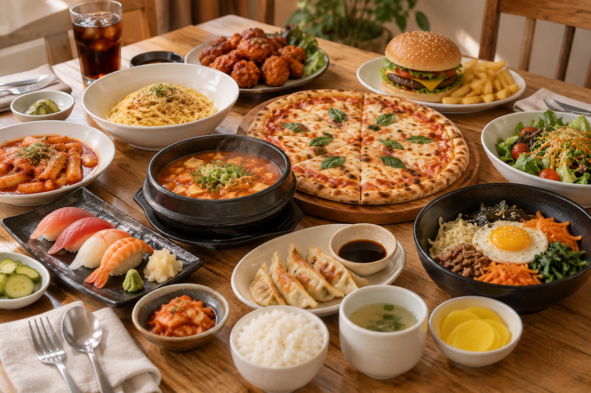

종류별 메뉴 둘러보기
음식 종류 탭을 선택해 추천 후보 메뉴를 미리 살펴보세요. 탭에서는 좌우 방향키로 이동할 수 있습니다.

오늘의 메뉴 추천
- 1 시작
- 2 취향 선택
- 3 확인
- 4 완료
오늘은 무엇을 먹을까요?
어떤 음식이 좋으세요?
선택한 취향을 확인해 주세요
- 음식 종류
- 매운맛 선호
[오류] 선택한 조건에 맞는 메뉴가 없어요. '취향 다시 선택' 버튼을 눌러 음식 종류나 매운맛 선호를 바꿔 주세요.
밥시간마다 찾아오는 고민, 뭐 먹을지 고민하는 시간을 해결합니다.
음식 종류 탭을 선택해 추천 후보 메뉴를 미리 살펴보세요. 탭에서는 좌우 방향키로 이동할 수 있습니다.

[오류] 선택한 조건에 맞는 메뉴가 없어요. '취향 다시 선택' 버튼을 눌러 음식 종류나 매운맛 선호를 바꿔 주세요.